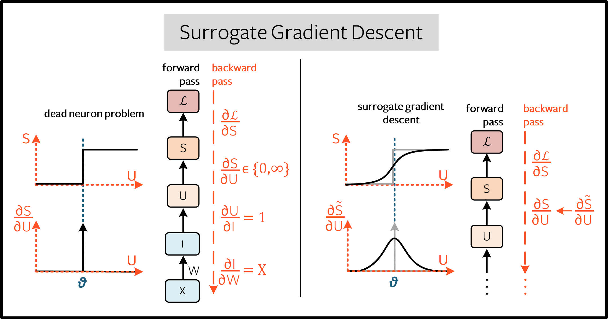
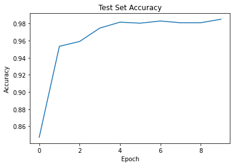

Русский перевод. Неофициальный перевод актуальной документации snnTorch latest (0.9.4). Оригинал: https://snntorch.readthedocs.io/en/latest/. Документация распространяется по лицензии CC BY-SA 3.0.
Учебник 6 - Суррогатный градиентный спуск в конволюционной SNN
Учебное пособие написано Джейсоном К. Эшрагианом (www.ncg.ucsc.edu)

Серия учебных пособий snnTorch основана на следующей статье. Если вы считаете эти ресурсы или код полезными в своей работе, пожалуйста, укажите следующий источник:
Примечание
- Этот учебник является статической нередактируемой версией. Интерактивные редактируемые версии доступны по следующим ссылкам:
Введение
В этом руководстве вы:
Узнайте, как модифицировать суррогатный градиентный спуск для преодоления проблемы мертвых нейронов
Постройте и обучите сверточную спайковую нейронную сеть
Используйте последовательный контейнер,
nn.Sequentialдля упрощения построения модели
Часть этого руководства была вдохновлена обширной работой Фридемана Ценке по SNNs. Посмотрите его репозиторий по суррогатным градиентам здесь, и моя любимая статья: E. O. Neftci, H. Mostafa, F. Zenke, Суррогатное градиентное обучение в спайковых нейронных сетях: Применение возможностей градиентной оптимизации к спайковым нейронным сетям. IEEE Signal Processing Magazine 36, 51–63.
В конце руководства мы обучим сверточную спайковую нейронную сеть (CSNN) на наборе данных MNIST для классификации изображений. Теоретическая основа следует из Уроков 2, 4 и 5, поэтому не стесняйтесь вернуться, если нужно освежить знания.
Установите последнюю версию дистрибутива snnTorch из PyPi:
$ pip install snntorch
# imports
import snntorch as snn
from snntorch import surrogate
from snntorch import backprop
from snntorch import functional as SF
from snntorch import utils
from snntorch import spikeplot as splt
import torch
import torch.nn as nn
from torch.utils.data import DataLoader
from torchvision import datasets, transforms
import torch.nn.functional as F
import matplotlib.pyplot as plt
import numpy as np
import itertools
1. Суррогатный градиентный спуск
Учебное пособие 5 поднял проблему проблема мертвых нейронов. Это возникает из-за недифференцируемости спайков:
где \(\Theta(\cdot)\) является функцией Хевисайда, а \(\delta(\cdot)\) является дельта-функцией Дирака. Ранее мы преодолели это с помощью порогово-сдвинутой ArcTangent функция на обратном проходе вместо этого.
Другие распространенные сглаживающие функции включают сигмоиду или быструю сигмоиду. Сигмоидальные функции также должны быть сдвинуты так, чтобы они были центрированы на пороге \(U_{\rm thr}.\) Определяя перегрузку мембранного потенциала как \(U_{OD} = U - U_{\rm thr}\):
где \(k\) модулирует гладкость суррогатной функции и рассматривается как гиперпараметр. По мере того как \(k\) увеличивается, аппроксимация сходится к исходной производной в \((2)\):
{kind=link}

Резюмируя:
Прямой проход
Определите \(S\) используя сдвинутую функцию Хевисайда в \((1)\)
Сохраните \(U\) для последующего использования во время обратного прохода
Обратный проход
Передайте \(U\) в \((4)\) для вычисления производного члена
Точно так же, как ArcTangent подход использовался в Учебное пособие 5, градиент быстрой сигмоиды может переопределить дельта-функцию Дирака в модели нейрона Leaky Integrate-and-Fire (LIF):
# Leaky neuron model, overriding the backward pass with a custom function
class LeakySigmoidSurrogate(nn.Module):
def __init__(self, beta, threshold=1.0, k=25):
# Leaky_Surrogate is defined in the previous tutorial and not used here
super(Leaky_Surrogate, self).__init__()
# initialize decay rate beta and threshold
self.beta = beta
self.threshold = threshold
self.surrogate_func = self.FastSigmoid.apply
# the forward function is called each time we call Leaky
def forward(self, input_, mem):
spk = self.surrogate_func((mem-self.threshold)) # call the Heaviside function
reset = (spk - self.threshold).detach()
mem = self.beta * mem + input_ - reset
return spk, mem
# Forward pass: Heaviside function
# Backward pass: Override Dirac Delta with gradient of fast sigmoid
@staticmethod
class FastSigmoid(torch.autograd.Function):
@staticmethod
def forward(ctx, mem, k=25):
ctx.save_for_backward(mem) # store the membrane potential for use in the backward pass
ctx.k = k
out = (mem > 0).float() # Heaviside on the forward pass: Eq(1)
return out
@staticmethod
def backward(ctx, grad_output):
(mem,) = ctx.saved_tensors # retrieve membrane potential
grad_input = grad_output.clone()
grad = grad_input / (ctx.k * torch.abs(mem) + 1.0) ** 2 # gradient of fast sigmoid on backward pass: Eq(4)
return grad, None
Еще лучше, все это можно объединить, используя встроенный модуль
snn.surrogate из snnTorch, где \(k\) from \((4)\) обозначается как slope. Суррогатный градиент передается в spike_grad
в качестве аргумента:
spike_grad = surrogate.fast_sigmoid(slope=25)
beta = 0.5
lif1 = snn.Leaky(beta=beta, spike_grad=spike_grad)
Чтобы изучить другие доступные функции суррогатного градиента, посмотрите документацию здесь.
2. Настройка CSNN
2.1 Загрузчики данных (DataLoaders)
# dataloader arguments
batch_size = 128
data_path='/tmp/data/mnist'
dtype = torch.float
device = torch.device("cuda") if torch.cuda.is_available() else torch.device("mps") if torch.backends.mps.is_available() else torch.device("cpu")
# Define a transform
transform = transforms.Compose([
transforms.Resize((28, 28)),
transforms.Grayscale(),
transforms.ToTensor(),
transforms.Normalize((0,), (1,))])
mnist_train = datasets.MNIST(data_path, train=True, download=True, transform=transform)
mnist_test = datasets.MNIST(data_path, train=False, download=True, transform=transform)
# Create DataLoaders
train_loader = DataLoader(mnist_train, batch_size=batch_size, shuffle=True, drop_last=True)
test_loader = DataLoader(mnist_test, batch_size=batch_size, shuffle=True, drop_last=True)
2.2 Определение сети
Используемая архитектура сверточной сети: 12C5-MP2-64C5-MP2-1024FC10
12C5 — это 5 \(\times\) сверточное ядро 5x5 с 12 фильтрами
MP2 — это 2 \(\times\) функция макс-пулинга 2x2
1024FC10 — это полносвязный слой, отображающий 1024 нейрона на 10 выходов
# neuron and simulation parameters
spike_grad = surrogate.fast_sigmoid(slope=25)
beta = 0.5
num_steps = 50
# Define Network
class Net(nn.Module):
def __init__(self):
super().__init__()
# Initialize layers
self.conv1 = nn.Conv2d(1, 12, 5)
self.lif1 = snn.Leaky(beta=beta, spike_grad=spike_grad)
self.conv2 = nn.Conv2d(12, 64, 5)
self.lif2 = snn.Leaky(beta=beta, spike_grad=spike_grad)
self.fc1 = nn.Linear(64*4*4, 10)
self.lif3 = snn.Leaky(beta=beta, spike_grad=spike_grad)
def forward(self, x):
# Initialize hidden states and outputs at t=0
mem1 = self.lif1.init_leaky()
mem2 = self.lif2.init_leaky()
mem3 = self.lif3.init_leaky()
cur1 = F.max_pool2d(self.conv1(x), 2)
spk1, mem1 = self.lif1(cur1, mem1)
cur2 = F.max_pool2d(self.conv2(spk1), 2)
spk2, mem2 = self.lif2(cur2, mem2)
cur3 = self.fc1(spk2.view(batch_size, -1))
spk3, mem3 = self.lif3(cur3, mem3)
return spk3, mem3
В предыдущем уроке сеть была обернута внутри класса, как показано выше. С увеличением сложности сети это добавляет много шаблонного кода, которого мы, возможно, хотим избежать. Альтернативно, метод nn.Sequential можно использовать вместо этого.
Примечание
Следующий блок кода моделирует один временной шаг и требует отдельного цикла for по времени.
# Initialize Network
net = nn.Sequential(nn.Conv2d(1, 12, 5),
nn.MaxPool2d(2),
snn.Leaky(beta=beta, spike_grad=spike_grad, init_hidden=True),
nn.Conv2d(12, 64, 5),
nn.MaxPool2d(2),
snn.Leaky(beta=beta, spike_grad=spike_grad, init_hidden=True),
nn.Flatten(),
nn.Linear(64*4*4, 10),
snn.Leaky(beta=beta, spike_grad=spike_grad, init_hidden=True, output=True)
).to(device)
Модуль init_hidden аргумент инициализирует скрытые состояния нейрона (здесь мембранный потенциал). Это происходит в фоне как переменная экземпляра. Если init_hidden активирован, мембранный потенциал явно не возвращается пользователю, что гарантирует, что только выходные спайки последовательно передаются через слои, обернутые в nn.Sequential.
Чтобы обучить модель, используя мембранный потенциал последнего слоя, установите аргумент output=True. Это позволяет последнему слою возвращать как спайк, так и мембранный потенциал нейрона.
2.3 Прямой проход
Прямой проход в течение длительности симуляции num_steps выглядит так:
data, targets = next(iter(train_loader))
data = data.to(device)
targets = targets.to(device)
for step in range(num_steps):
spk_out, mem_out = net(data)
Оберните это в функцию, записывая мембранный потенциал и спайковый ответ во времени:
def forward_pass(net, num_steps, data):
mem_rec = []
spk_rec = []
utils.reset(net) # resets hidden states for all LIF neurons in net
for step in range(num_steps):
spk_out, mem_out = net(data)
spk_rec.append(spk_out)
mem_rec.append(mem_out)
return torch.stack(spk_rec), torch.stack(mem_rec)
spk_rec, mem_rec = forward_pass(net, num_steps, data)
3. Обучающий цикл
3.1 Потери с использованием snn.Functional
В предыдущем руководстве для обучения сети использовалась кросс-энтропийная потеря между мембранным потенциалом выходных нейронов и целевым значением. На этот раз вместо этого для вычисления кросс-энтропии будет использоваться общее количество спайков от каждого нейрона.
Различные функции потерь включены в модуль snn.functional который аналогичен torch.nn.functional в PyTorch.
Они реализуют смесь кросс-энтропийных и среднеквадратичных потерь, применяемых к спайкам и/или мембранному потенциалу, для обучения сети с кодированием скорости или задержки.
Нижеприведенный подход применяет кросс-энтропийную потерю к количеству выходных спайков для обучения сети с кодированием скорости:
# already imported snntorch.functional as SF
loss_fn = SF.ce_rate_loss()
Записи спайков передаются в качестве первого аргумента в
loss_fn, а индекс целевого нейрона — в качестве второго аргумента для
генерации потери. Документация предоставляет дополнительную информацию и
примеры.
loss_val = loss_fn(spk_rec, targets)
>>> print(f"The loss from an untrained network is {loss_val.item():.3f}")
The loss from an untrained network is 2.303
3.2 Точность с использованием snn.Functional
Модуль SF.accuracy_rate() функция работает аналогично: в качестве аргументов подаются предсказанные выходные спайки и фактические целевые значения.
accuracy_rate предполагает использование кода скорости для интерпретации выхода путем проверки, совпадает ли индекс нейрона с наибольшим количеством спайков
с целевым индексом.
acc = SF.accuracy_rate(spk_rec, targets)
>>> print(f"The accuracy of a single batch using an untrained network is {acc*100:.3f}%")
The accuracy of a single batch using an untrained network is 10.938%
Поскольку вышеуказанная функция возвращает точность только для одного пакета данных, следующая функция возвращает точность для всего объекта DataLoader:
def batch_accuracy(train_loader, net, num_steps):
with torch.no_grad():
total = 0
acc = 0
net.eval()
train_loader = iter(train_loader)
for data, targets in train_loader:
data = data.to(device)
targets = targets.to(device)
spk_rec, _ = forward_pass(net, num_steps, data)
acc += SF.accuracy_rate(spk_rec, targets) * spk_rec.size(1)
total += spk_rec.size(1)
return acc/total
test_acc = batch_accuracy(test_loader, net, num_steps)
>>> print(f"The total accuracy on the test set is: {test_acc * 100:.2f}%")
The total accuracy on the test set is: 8.59%
3.3 Цикл обучения
Следующий цикл обучения качественно похож на предыдущий учебник.
optimizer = torch.optim.Adam(net.parameters(), lr=1e-2, betas=(0.9, 0.999))
num_epochs = 1
loss_hist = []
test_acc_hist = []
counter = 0
# Outer training loop
for epoch in range(num_epochs):
# Training loop
for data, targets in iter(train_loader):
data = data.to(device)
targets = targets.to(device)
# forward pass
net.train()
spk_rec, _ = forward_pass(net, num_steps, data)
# initialize the loss & sum over time
loss_val = loss_fn(spk_rec, targets)
# Gradient calculation + weight update
optimizer.zero_grad()
loss_val.backward()
optimizer.step()
# Store loss history for future plotting
loss_hist.append(loss_val.item())
# Test set
if counter % 50 == 0:
with torch.no_grad():
net.eval()
# Test set forward pass
test_acc = batch_accuracy(test_loader, net, num_steps)
print(f"Iteration {counter}, Test Acc: {test_acc * 100:.2f}%\n")
test_acc_hist.append(test_acc.item())
counter += 1
Вывод должен выглядеть примерно так:
Iteration 0, Test Acc: 9.82%
Iteration 50, Test Acc: 91.98%
Iteration 100, Test Acc: 94.90%
Iteration 150, Test Acc: 95.70%
Несмотря на выбор довольно общих значений и архитектур, точность на тестовом наборе должна быть вполне конкурентоспособной при таком коротком прогоне обучения!
4. Результаты
4.1 Построение графика точности на тестовом наборе
# Plot Loss
fig = plt.figure(facecolor="w")
plt.plot(test_acc_hist)
plt.title("Test Set Accuracy")
plt.xlabel("Epoch")
plt.ylabel("Accuracy")
plt.show()
{kind=link}

4.2 Счетчик спайков
Выполните прямой проход на пакете данных, чтобы получить показания спайков и мембранного потенциала.
spk_rec, mem_rec = forward_pass(net, num_steps, data)
Изменение idx позволяет вам индексировать различные образцы из
симулированного мини-батча. Используйте splt.spike_count чтобы исследовать спайковое
поведение нескольких различных образцов!
Примечание: если вы запускаете блокнот локально на своём компьютере, пожалуйста, раскомментируйте строку ниже и измените путь к вашему ffmpeg.exe
from IPython.display import HTML
idx = 0
fig, ax = plt.subplots(facecolor='w', figsize=(12, 7))
labels=['0', '1', '2', '3', '4', '5', '6', '7', '8','9']
# plt.rcParams['animation.ffmpeg_path'] = 'C:\\path\\to\\your\\ffmpeg.exe'
# Plot spike count histogram
anim = splt.spike_count(spk_rec[:, idx].detach().cpu(), fig, ax, labels=labels,
animate=True, interpolate=4)
HTML(anim.to_html5_video())
# anim.save("spike_bar.mp4")
>>> print(f"The target label is: {targets[idx]}")
The target label is: 3
Заключение
Теперь вы должны иметь представление об основных возможностях snnTorch и сможете начать запускать свои собственные эксперименты. В следующем учебном пособии, мы обучим сеть, используя нейроморфный набор данных.
Особая благодарность Gianfrancesco Angelini за ценные отзывы по учебнику.
Если вам нравится этот проект, пожалуйста, рассмотрите возможность поставить звезду ⭐ репозиторию на GitHub, так как это самый простой и лучший способ поддержать его.